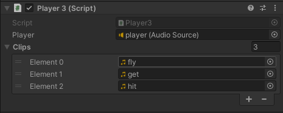

- .多用作UI音效
- .每次播放都新开一个音效，可以产生叠加的效果
- .使用这个函数播放音效，不能为音频源组件指定音频剪辑，而应单独指定
- [] 单击鼠标，播放音效
- 1.创建对象player，添加Audio Source组件，取消自动播放
- 2.创建脚本Player2.cs并挂载到对象player
- 3.在对象player的监视视图Inspector中，为脚本指定Audio Source、Audio clip
- 4.运行游戏，单击鼠标，查看效果；如果连续单击鼠标呢？
-
using System.Collections;
using System.Collections.Generic;
using UnityEngine;
public class Player2 : MonoBehaviour
{
public AudioSource player;
public AudioClip clip;
private void Update()
{
if (Input.GetMouseButtonDown(0))
{
player.PlayOneShot(clip);
}
}
}
- [] 多音频Audio Clip播放
- .定义一个clip数组，分别指定不同的clip；单击鼠标，随机获取一个index，根据index播放对应的clip
- 1. 创建对象player，添加Audio Source组件，取消自动播放
- 2. 创建脚本Player3.cs并挂载到对象player
- 3. 在对象player的监视视图Inspector中，为脚本指定Audio Source、多个Audio clip
- 4. 运行游戏，单击鼠标
-

-
using System.Collections;
using System.Collections.Generic;
using UnityEngine;
public class Player3 : MonoBehaviour
{
public AudioSource player;
public AudioClip[] clips;
int ind = 0;
private void Update()
{
if (Input.GetMouseButtonDown(0))
{
ind = Random.Range(0, clips.Length);
player.PlayOneShot(clips[ind]);
}
}
}
- Resources.Load()
- .加载本地指定类型的资源，如音频
- .加载的资源不需要后缀名，因为已经指定了类型
- .系统默认会在Assets下的Resources文件夹中查找资源，所以资源文件必须存放在Resources文件夹中；Resources文件夹需提前建好
- .可以使用多个Resources文件夹，请保持资源文件名唯一，不要重用
- .使用正斜杠/路径；路径大小写敏感
- .加载的音频资源可以使用Play或PlayOneShot播放；其它资源的加载和使用类似
- .更多信息，请访问Resources.Load
-
using System.Collections;
using System.Collections.Generic;
using UnityEngine;
public class Test : MonoBehaviour
{
AudioSource player;
AudioClip clip;
void Start()
{
player=gameObject.GetComponent<AudioSource>();
clip = Resources.Load<AudioClip>("wang");
player.clip = clip;
player.Play();
}
}